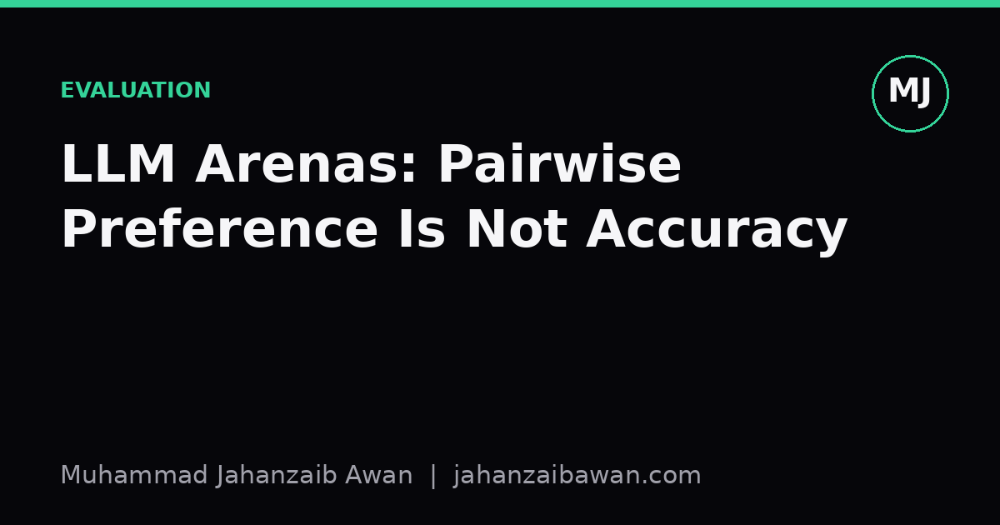
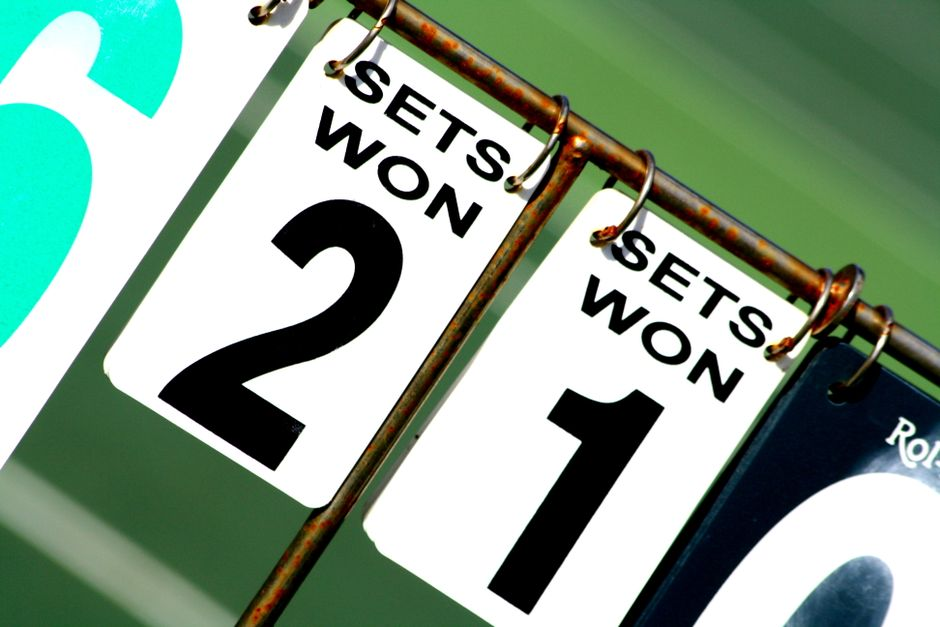

LLM Arenas: Pairwise Preference Is Not Accuracy
Arena style leaderboards rank models by who wins head to head comparisons, but that win rate is answering a different question to the one accuracy answers.

Two questions that sound alike but are not
When a model 'wins' an arena style comparison, a human or a judge model was shown two responses to the same prompt and asked which one they preferred. That preference is then aggregated, often with a Bradley-Terry or Elo style model, into a single score per system. It looks like accuracy because it produces a leaderboard with numbers next to names, and higher is better. But the underlying question being answered is 'which response would I rather read', not 'which response is correct'. Those two questions overlap a great deal in practice, which is exactly why it is easy to conflate them, but they are not the same measurement and they do not always move together.
Accuracy, in the classic sense, requires a ground truth. You need a reference answer, a test case that passes or fails, or a labelled class, and you compare the model's output against it. Preference requires no ground truth at all. A judge can express a preference between two fluent, well-formatted, confidently wrong answers just as easily as between two correct ones. This is not a flaw in the judges; it is simply what the instrument was built to measure. An arena is a taste test, and taste tests are legitimate, but they are measuring palatability, not nutritional content.
I think the confusion persists because both metrics produce a ranking, and rankings feel like they must be measuring the same underlying quality. They are not. A ranking by preference and a ranking by correctness can differ substantially whenever style, tone, formatting, or confidence correlate with what humans like but not with what is true.
A worked example of the divergence
Suppose we run a small arena with two models, A and B, on a set of 200 factual questions where we happen to also have ground truth answers, so we can compute accuracy independently of the preference votes. Model A answers correctly on 150 of the 200 questions, an accuracy of seventy five per cent. It writes tersely, sometimes hedging with phrases like 'I am not fully certain, but'. Model B answers correctly on 120 of the 200, an accuracy of sixty per cent, but it writes with confident, structured, friendly prose and never hedges, even on the questions it gets wrong.
Now put the two models head to head on the same 200 prompts and ask human judges to pick a preferred response, without giving them the ground truth. In my experience with this kind of setup, confident and well formatted wrong answers are frequently preferred over hedged correct ones, because judges are pattern matching on fluency and certainty as proxies for quality when they cannot check the facts themselves. Say Model B wins the pairwise vote 58 per cent of the time. On the arena leaderboard, B sits above A. On an accuracy leaderboard, using the same 200 questions, A sits comfortably above B by fifteen points.
Neither leaderboard is wrong. They are answering different questions, and both answers are numerically honest given their own definitions. The danger is entirely in how the numbers get used downstream. If a team picks a model for a task where factual correctness is the whole point, such as summarising clinical guidance or extracting numbers from contracts, and they pick based on arena rank alone, they may be selecting the more likeable model rather than the more correct one. The gap between 58 per cent preference and a fifteen point accuracy deficit is not a rounding error; it is the entire signal being missed.
This effect compounds when the judge is itself an LLM rather than a human, since automated judges tend to inherit similar biases toward length, structure, and confident phrasing. Using an LLM judge does not remove the style-versus-substance gap; it just moves the bias into a different, less visible layer of the pipeline.
Why this matters beyond the toy numbers
Preference and accuracy diverge most sharply in exactly the domains where getting it right matters most: anything with a checkable answer, such as arithmetic, code correctness, factual recall, or following a strict format. In open-ended creative or conversational tasks, where there often is no single correct answer, preference is arguably the more appropriate metric, because 'accuracy' has no clean definition there anyway. The mistake is treating a single arena score as a universal quality signal that transfers across both kinds of task.
There is also a subtler leakage-style risk worth naming. If a model has been tuned, even indirectly, against human preference data collected from a similar population of judges to the one running the arena, its win rate will reflect how well it has learned that population's taste, not how well it generalises to correctness on unseen, checkable problems. This is a form of distribution matching rather than capability measurement, and it can inflate arena rank in a way that a held-out accuracy benchmark, built from independent ground truth, will not reproduce.
None of this is an argument against arenas. Pairwise human preference is a legitimate, useful signal for the things it actually measures, such as tone, helpfulness, formatting, and general likeability of responses, and these matter enormously for user-facing products. The argument is against reading a single arena score as a proxy for correctness on tasks it was never designed to test.
The practical takeaway
If you are choosing a model, decide first which question you actually need answered. If the task has a checkable ground truth, correctness, code that runs, numbers that match, facts that are verifiable, then build or use an accuracy benchmark with a clean, leakage-aware split and trust that over any preference leaderboard. If the task is genuinely open-ended and subjective, an arena style comparison is the more honest instrument, and you should not go looking for an accuracy number that does not meaningfully exist for that task.
Best practice, when resources allow, is to report both: a preference score for likeability and an accuracy score against ground truth, computed on the same set of prompts so the two can be compared directly, as in the worked example above. The moment those two numbers disagree, as they often will, is the moment you learn something real about your model that a single leaderboard rank would have hidden.
